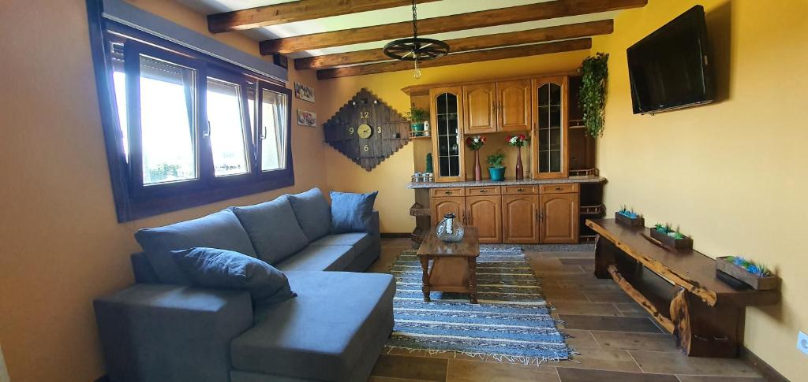
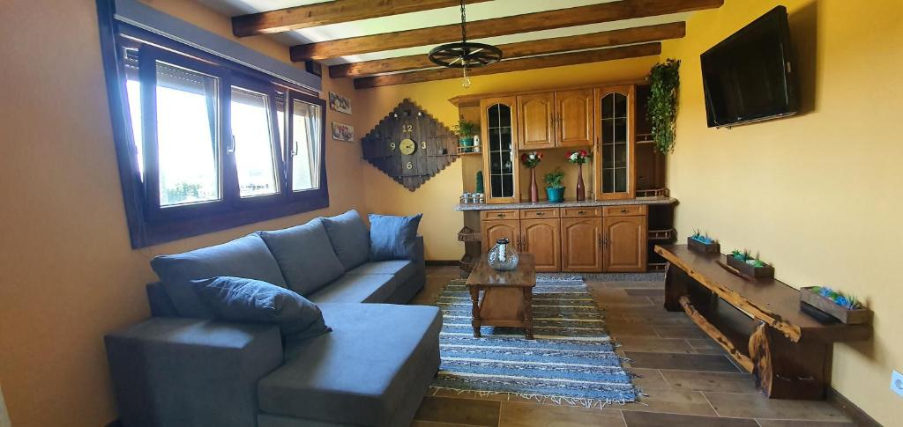

Unha experiencia reconfortante do rural para toda a familia.
Te invitamos a pasar unos días de vacaciones en nuestra casa rural. Vivienda Maria Lourdes está abierta para ti todo el año.Y podrás disfutar de las maravillas que se esconden tanto en los alrededores de la aldea como en sus proximidades. Concectando con otras aldeas, haciendo actividades en el Río Tambre o explorando las rutas de senderismo.
La casa tiene capacidad para 7 personas, tiene terraza, vistas a la ciudad, 3 dormitorios, sala de estar, TV de pantalla plana, cocina equipada con nevera y horno y 2 baños con bidet. También cuenta con zona de estar, lavadora y 2 baños con secador de pelo.
Contamos por supuesto con jardín y aparcamiento propios, además de una barbacoa donde poder disfrutar de los mejores momentos en familia.
Volver al índiceComo bien comentábamos antes, aquí te dejamos varios sitios de interés que podría gustarte visitar durante vuestra estancia en la casa.


 


Esta sección se encuentra en desarrollo, por lo que solo se mostrará el més actual. Para reservar llamar al 981223344.
| Días reservados |
|---|
| Octubre 2023 | ||||||
|---|---|---|---|---|---|---|
| Lunes | Martes | Miércoles | Jueves | Viernes | Sábado | Domingo |
| 1 | ||||||
| 2 | 3 | 4 | 5 | 6 | 7 | 8 |
| 9 | 10 | 11 | 12 | 13 | 14 | 15 |
| 16 | 17 | 18 | 19 | 20 | 21 | 22 |
| 23 | 24 | 25 | 26 | 26 | 28 | 29 |
| 30 | 31 |